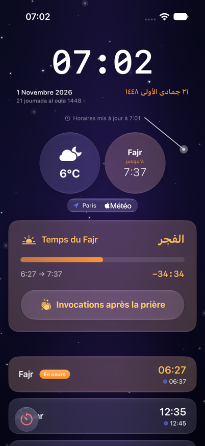
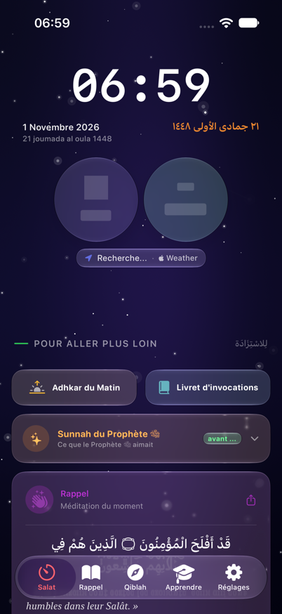
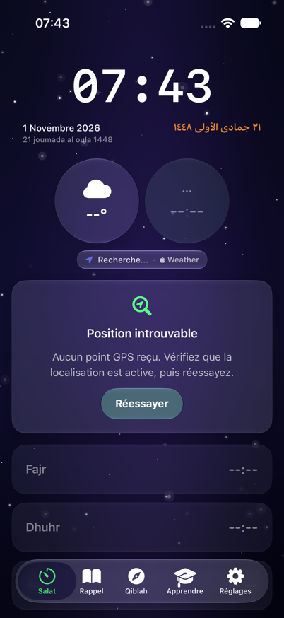
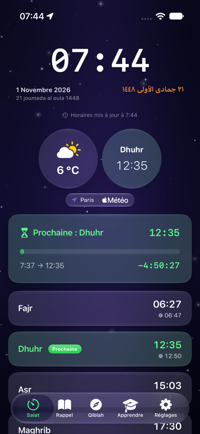
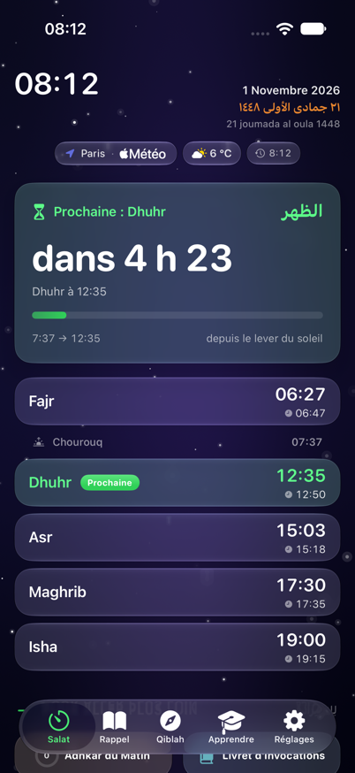
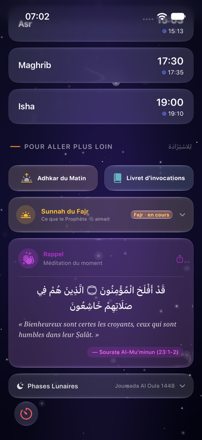
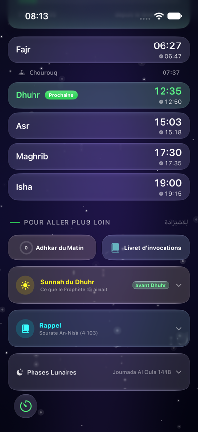

Revue Design / UX / CTO
et proposition « Salat v2 »
Trois audits indépendants sur le code réel de l'onglet, confrontés à des captures du simulateur. La structure est bonne ; l'exécution ne tient pas la promesse n°1 : dire en 3 secondes quelle est la prochaine prière et combien de temps il reste.
Quatre constats partagés
Chacun est remonté par au moins deux disciplines et visible soit à l'écran, soit dans un test simple.
L'info n°1 est la plus petite
Le décompte fait 17 pt sous une horloge de 65 pt. La prière en cours est affichée trois fois au-dessus du fold.
L'état se fige app ouverte
Aucun minuteur dans le ViewModel. Après le lever du soleil, la jauge reste sur « Fajr -0:00 ». Si les notifications sont refusées, elle ne bouge plus jamais.
Deux heures d'iqamah
Par défaut la liste affiche +10 min, la carte et les réglages +20/15 min. Visible sur la capture : Fajr 06:37 dans la liste.
Sans GPS, écran vide
Squelettes perpétuels, trou de 100 pt, aucune action proposée. Confirmé sur simulateur.
Fajr en cours, 07:02, Paris
À gauche la capture réelle du simulateur. À droite une maquette CSS du héros proposé : même contenu, hiérarchie inversée, cinq prières au-dessus du fold.

- 1Horloge 65 pt monospaced : l'élément dominant n'est pas l'information recherchée.
- 2Cercle « Fajr jusqu'à 7:37 » en graisse light, puis carte « Temps du Fajr », puis badge « En cours » : trois fois la même prière.
- 3Le décompte « -34:34 », seule valeur vivante, est le plus petit texte du groupe. Format signé peu lisible.
- 4Bouton Adhkar de 58 pt dans la jauge : une des quatre portes d'entrée Adhkar de l'écran.
- 5Première ligne de prière à y ≈ 700. Deux prières visibles, Dhuhr sous la tab bar. Iqamah 06:37 (+10) contredit la carte iqamah (+20).
21 Joumada al-Oula 1448
- 1Horloge ramenée à 34 pt, rounded, même famille que les heures. Ville, météo et fraîcheur en une rangée de chips.
- 2Un héros unique teinté
PrayerStateTint.now: prière, décompte en 42 pt « reste 34 min », barre, fin de fenêtre et prochaine prière. Les cercles et la carte de décompte disparaissent. - 3Formulation naturelle et
monospacedDigit. Au lever du soleil, le ViewModel bascule seul sur « Prochaine : Dhuhr ». - 4Cinq prières (plus Chourouq en ligne fine) en 54 pt avec
@ScaledMetric: toutes au-dessus du fold. Une seule source d'iqamah : 06:47. - 5Zone 2 : le bouton Adhkar porte la progression du jour (« 4/10 »), la Sunnah reste contextuelle. Deux portes Adhkar au lieu de quatre.
Premier lancement ou position inconnue
Aujourd'hui l'écran attend indéfiniment. La proposition : un état vide explicite, avec une action, et la zone 2 qui reste utile.

- 1Deux squelettes gris dans des cercles en verre, « Recherche… ». Aucun délai maximal :
isLoadingne redescend jamais si le calcul échoue. - 2Trou de 100 pt : la liste et la jauge sont absentes sans laisser de place explicite ni de message.
- 3Badge « avant … » tronqué sur la Sunnah : la prière de contexte est inconnue.
21 Joumada al-Oula 1448
Où êtes-vous ?
Les horaires de prière dépendent de votre position. Autorisez la localisation ou choisissez une ville.
- 1Carte d'état vide : une phrase, deux actions de 44 pt minimum. Si une dernière position est connue, on affiche ses horaires avec la mention « dernière position connue ».
- 2La liste garde sa place en « --:-- » atténué : pas de trou, pas de saut quand les horaires arrivent (règle anti-wiggle 5).
- 3La Sunnah sans contexte affiche son titre générique, sans badge tronqué.
Lot 1 sur simulateur : avant / après réels
Captures iPhone 17 après implémentation du lot 1. À gauche la version du matin, à droite la même app le soir même. Aucune maquette ici.
- 1Squelettes perpétuels, trou de 100 pt, aucune action, badge « avant … » tronqué.

- 1Carte « Position introuvable » avec bouton « Réessayer » de 44 pt, liste en « --:-- » atténué, 16 pt d'écart mesurés, zone 2 intacte.
- 1Bouton Adhkar de 58 pt dans la jauge, trou de 50 pt avant la liste, iqamah de Fajr à +10 min.

- 1Jauge sans bouton, 16 pt avant la liste, iqamah de Fajr à 06:47 (+20 min, même source partout), couleurs d'état via les tokens. Le héros unique reste l'objet du lot 2.
Lot 2 sur simulateur : le héros unique, en vrai
Même iPhone 17, même matin. À gauche l'écran du début de journée, à droite l'écran après le lot 2 : horloge compacte, chips, héros « Prochaine : Dhuhr », puis les cinq prières et Chourouq au-dessus de la tab bar.
- 1Horloge 65 pt, deux cercles, carte « Temps du Fajr » de 218 pt : la liste commence à y ≈ 700, deux lignes visibles.

- 1Horloge 34 pt, chips ville · météo · fraîcheur, héros « dans 4 h 23 » teinté par l'état, lignes de 54 pt. Bas d'Isha à 759 pt, tab bar à 791 pt.

- 1Rappel coranique déplié de 260 pt, quatre portes Adhkar sur l'écran, surfaces hétérogènes.

- 1Bouton Adhkar avec anneau de progression, Sunnah contextuelle, Rappel replié, Lune. Espacement régulier de 12 pt, une seule grammaire de verre.
Un système au lieu de six
Les tokens existent déjà dans DesignSystem.swift. Il s'agit de les appliquer partout dans l'onglet.
| Dimension | Constat |
|---|---|
| Surfaces | glassCard · glassCardSecondary · glassEffect inline · .ultraThinMaterial + contour (Dhuhr, Iqamah) · cardStyle .regularMaterial + ombre (voyage) · aplats et dégradés (saison, GPS, salawat) |
| Rayons | 20 (token) et en dur : 18, 16, 14, 12, 8 |
| Paddings | 24, 20, 16, 14, 16×12, 14×10 pour des cartes de même rang |
| Couleurs d'état | Iqamah en vert pendant la prière en cours · Jumu'ah en indigo (= nuit) · rotation teal/indigo/violet/vert du rappel · onglet en rouge, couleur de l'alerte |
| Chiffres | 3 familles pour une heure : monospaced, rounded light, rounded bold ; liste sans monospacedDigit |
| Arabe | ScriptureFont sur 1 carte sur 7 ; verset du rappel en .system 19 |
| Dimension | Règle |
|---|---|
| Surfaces | Deux niveaux seulement : glassCard (zone 1, contenu vivant) et glassCardSecondary (zone 2, discret). cardStyle déprécié. |
| Rayons | CornerRadius.card = 20 partout, .continuous ; badge = 12 |
| Paddings | Un token par rang : carte 16, héros 20, chip 8×12 |
| Couleurs d'état | now · next · night via PrayerStateTint ; ModuleAccent.quran fixe pour le rappel ; token dédié Jumu'ah ; onglet teinté par l'état, pas en rouge |
| Chiffres | Une famille : rounded + monospacedDigit, horloge comprise |
| Arabe | ScriptureFont pour tout texte scripturaire (verset, hadith, dhikr, sunnah) ; token arabicLabel pour l'hégirien et les titres |
Ce qui se voit dans Instruments avant de se voir à l'écran
Pas de minuteur dans le ViewModel
La fenêtre de prière n'est recalculée que sur position, retour au premier plan ou notification d'adhan. forceRecalculation s'appuie sur un asyncAfter(0.5). Correctif : une Task qui dort jusqu'à la prochaine borne.
76 sources d'invalidation
MainView observe le cap de la boussole (60 Hz) et la position du podcast (2 Hz). Tout le body, TabView comprise, est réévalué à chaque tick. Sortir CompassManager vers Qibla, isoler le temps du podcast.
AdhkarMomentCard jamais affichée
Le .task est attaché à un Group vide au départ : il ne s'exécute jamais. Le piège est documenté dans RamadanDuaCardView. À confirmer sur appareil, correctif S.
11 calculs de saison par rendu
IslamicSeasonInfo.current() crée un calendrier Umm al-Qura à chaque appel ; date: .now passé aux sous-vues ; DateFormatter dans les body ; identités UUID() dans les ForEach.
Fond à 30 Hz en permanence
Les étoiles filantes tiquent 100 % du temps pour dessiner 10 % du temps, sous 15 à 20 surfaces de verre. Deux instances du fond (onglets 0 et 2).
Swift 5, coordinator dans la vue
La cible app compile en SWIFT_VERSION 5.0. MainView (959 lignes) porte les deep-links, les saisons et la planification des rappels, avec des print. Extraire un AppRouter observable.
Sprint « Salat v2 » en trois lots
Lot 1 · Corrections visibles ≈ 1 semaine · S
- Minuteur de recalcul dans PrayerTimesViewModel, fenêtre Isha de la veille incluse
- IqamahDefaults et IqamahKeys centralisés, un seul
delay(for:) - AdhkarMomentCard : conteneur toujours présent + TimelineView
- État vide sans GPS avec actions ;
isLoadinglevé sur échec - Couleurs via PrayerStateTint, surfaces via glassCard / glassCardSecondary
- Transitions animées, geometryGroup, LanguageToggleChip
- Cibles tactiles 44 pt ; 4 portes Adhkar → 2
- Dégradé matin/soir, fr_FR, °C
Lot 2 · Héros et hiérarchie ≈ 2 semaines · M
- Héros unique « Prochaine prière » 42 pt, formulation naturelle, horloge 34 pt
- Suppression de NextPrayerWidget et NextPrayerCountdownCard ; météo en chip
- Lignes 54 pt @ScaledMetric, Chourouq ajouté, hadith Qiyam en zone 2
- Fusions : Dhuhr → héros ; Wudu + adhkar wudu ; RamadanDua après la liste
- Zone 2 plafonnée à 3 cartes contextuelles ; rappel coranique replié ou déplacé ; salawat retiré (doublon Rappel)
- Progression Adhkar visible sur le bouton
- Un seul moteur de suggestion (LearnSuggestionEngine)
Lot 3 · Accessibilité et performance ≈ 2 semaines · M-L
- CompassManager hors de MainView ; temps du podcast isolé
- Saison une fois par rendu, formatters statiques, identités stables, fond unique planifié
- Échelle AppFont, minHeight, @ScaledMetric sur les cercles
- VoiceOver : éléments combinés, arabe décoratif masqué, langue ar, contraste ≥ 0.5, Reduce Motion sur les pulses
- AppRouter @Observable, os.Logger, notifications async, SWIFT_VERSION 6
- Suppression du code mort ; ProgressCapsule, StatusChip
- Tests : IslamicSeasonInfo, ProphetSunnahProvider, MoonPhase, NotificationDeepLink, SalatContext
Critères d'acceptation Salat v2
- iPhone 16 et SE, sans scroller : héros + 5 prières visibles dans tous les états (hors fenêtre, en fenêtre, nuit, Ramadan).
- Un seul affichage de la prochaine prière, un seul format de décompte.
- Sans GPS : état vide explicite avec action, zéro squelette au-delà de 5 s.
- Réglages par défaut : une seule heure d'iqamah par prière, identique liste / carte / widget / Watch.
- App ouverte au lever du soleil : la jauge bascule seule sur « Prochaine : Dhuhr ».
- VoiceOver lit le héros en une phrase ; Dynamic Type AX3 sans débordement ; Réduire les animations stoppe tous les effets.
- Instruments : zéro réévaluation du body de MainView pendant un podcast ou la rotation de la boussole.
- Zéro surface hors glassCard / glassCardSecondary, zéro rayon en dur, zéro couleur d'état hors PrayerStateTint / ModuleAccent.